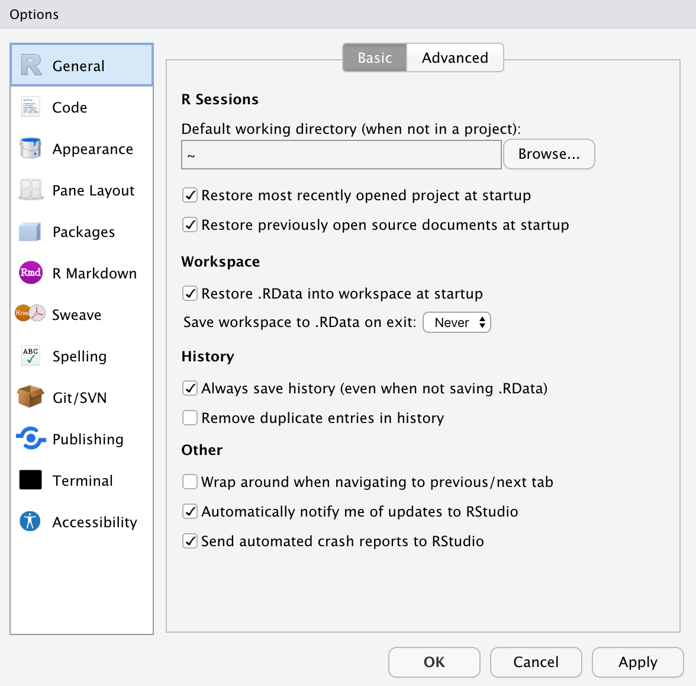

1 R and RStudio: Installation and Setup
In this chapter, we will walk you through the process of installing R and the desktop version of RStudio. Although you will need to install both R and RStudio, once they are installed you will only interact with RStudio when you compute.
1.1 Installing R
To install R, navigate your web browser to:
Then,
- Click the
CRANlink underDownloadon the left-hand side of the page. - Select a mirror site. These should all be the same, but I tend to choose the
Iowa State Universitylink underUSA.1 - In the
Download and Install Rbox, choose the binary that matches the operating system (OS) for your computer.
This is where the installation directions diverge depending on your OS.
Mac Instructions
So long as you are running MacOS 10.13 or higher just click the first link for the PKG, which will download the installer for the most current version of R (4.1.1 as of August 16, 2021). Once the download completes, open the installer and follow the directions to install R on your computer.
If you are running an older version of MacOS, you will have to install an older version of R. You can find these links under the Binaries for legacy OS X systems heading further down the install page. Click the appropriate PKG link for R your version of MacOS. Once the download completes, open the installer and follow the directions to install R on your computer.
If you are unsure which version of the MacOS is running on your computer, select About this Mac from the Apple menu in your toolbar.
Windows Instructions
Click the link that says Install R for the first time (or click base; they go to the same place). Then click the Download R 4.1.1 for Windows link, which will download the installer for the most current version of R (4.0.2 as of July 24, 2020). Once the download completes, open the installer and follow the directions to install R on your computer.
Linux Instructions
If you are running Linux, you should know how to install things on your computer. üòÄ
1.2 Installing RStudio Desktop
After you have installed R, you next need to install RStudio Desktop. To do this, navigate your web browser to:
https://rstudio.com/products/rstudio/download/
Then,
- Select the blue
Downloadbutton under the free, open-source version of RStudio Desktop. - Select the installer associated with your computer’s OS.
- Once the download completes, open the installer and follow the directions to install RStudio Desktop on your computer.
1.3 Checking that Things Worked
From your Applications or Programs folder, open RStudio. If you have successfully downloaded both programs, this should open the application and you should see a message indicating that you are using “R version 4.1.1” (or whichever version of R you installed) in the console pane.

R version 4.1.1 (or whichever version of R you installed) in the console pane. Here the console pane is on the left-side, but it may be in a different location for you. Your RStudio may also have a white background rather than the black background seen here.1.4 Customizing RStudio
While the information in this section is not crucial for making things work, it is useful to get RStudio looking good and setting some default settings. Open the Tools > Options menu (Windows) or RStudio > Preferences (Mac).

- In the
General > Basicsettings, change the option onSave workspace to .Rdata on exitto be “Never”. Click the “Apply” button. - In the
Appearancesettings, customize the look of RStudio to something aesthetically appealing to you. When you are finished, click the “Apply” button. - There are also options you can set in the
Accessibilitysettings if you use a screen reader. If you change anything, don’t forget to click the “Apply” button.
When you are finished customizing RStudio, click the “OK” button.
1.5 Install Rtools/Command Line Tools
You may need to install some additional functionality to your system in order to get certain packages to install or load properly. On a Windows machine, you might need to install Rtools. Mac users might need to add the Command Line Tools. These tools also allow you to write and compile your own R packages. RStudio has well written instructions for adding these tools at: https://support.rstudio.com/hc/en-us/articles/200486498-Package-Development-Prerequisites.
When internet used to be dial-up (i.e., super slow), you wanted to choose a mirror site that was closest in proximity to your location as it sped up the download. This is less of a concern now that internet download speeds are much faster.↩︎